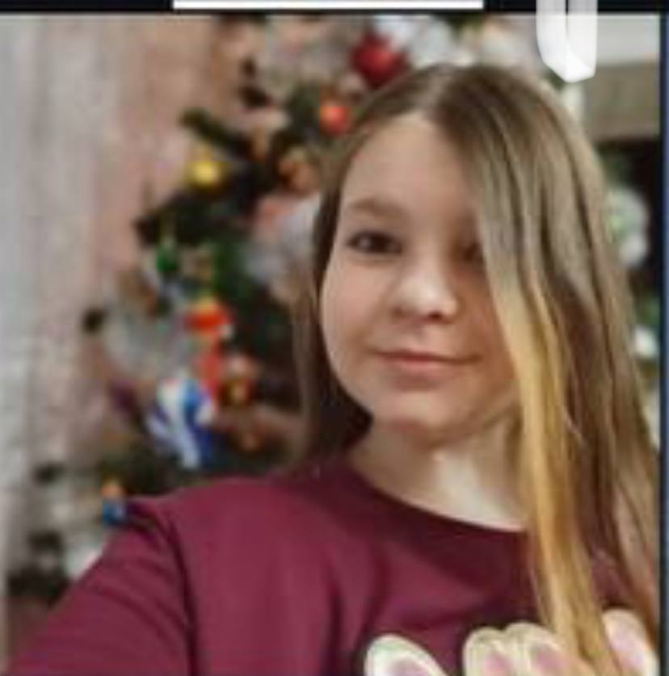
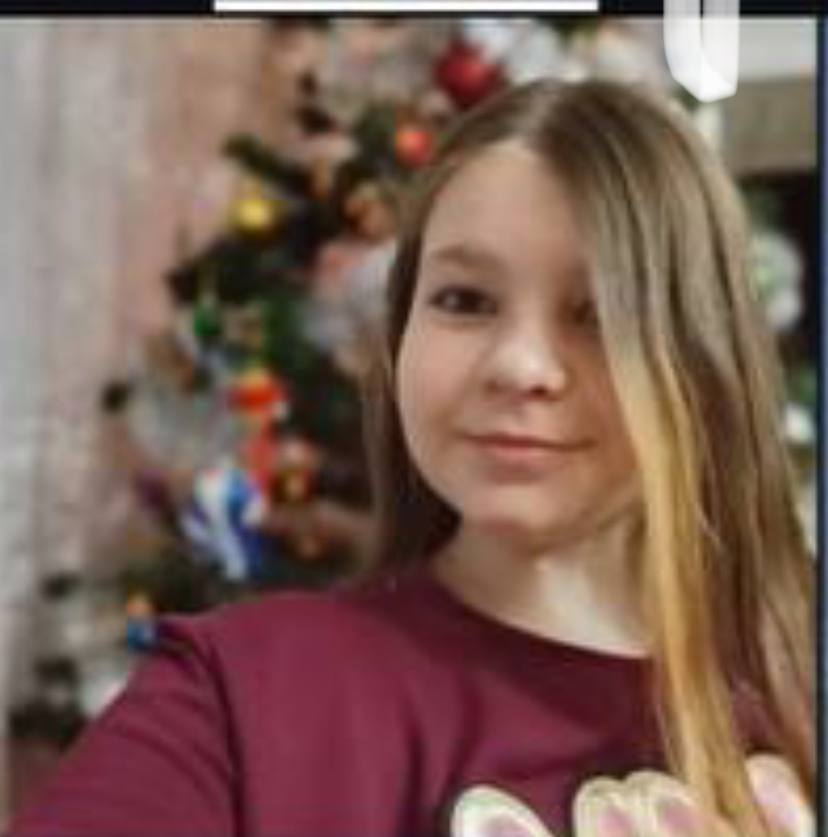
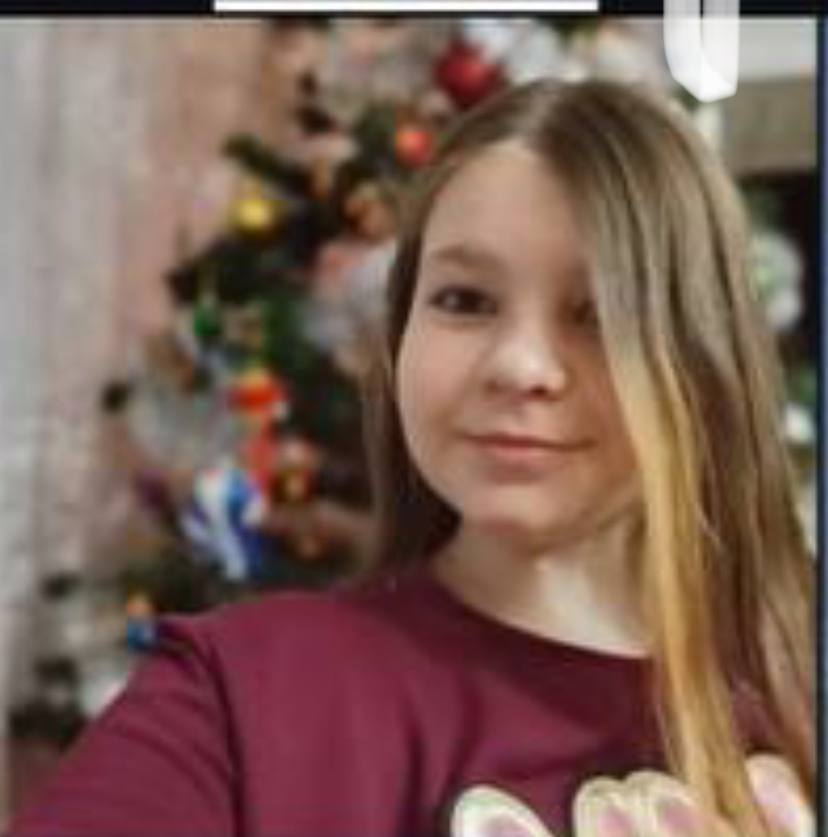

История началась так, Надя пришла в школу в 5 лет в 1-Г ее мать была учителем в школе(шлю…) кхм… возвращаемся к истории. Ее сначала не булили, но после того как она стала пытаться со всеми встречаться, приставать к людям и доебывать их ее начали ненавидить и поэтому ее потихоньку начали булить, так же она жаловалась на все своей мамке, и позже ее ебатя начал заступаться за нее вместо мамы, так как видимо мамке она уже надоела. У Нади есть собственные стикеры которые сделали ее одноклассники, которых она уже конкретно заебала переход на стикеры сверху . На данный момент эта особа находиться в 7-Г наверное худший класс в школе. Данный класс ведёт себя плохо, из-за некоторых особ(все девочки из 7-г все мальчики из 7-Г тоже, кроме Андрея Фетисова.) Все, это все что мне пришло на ум пока не было света на момент 18:00 у меня должны включить свет поэтому все.(я это писал когда у меня не было света и было скучно)
